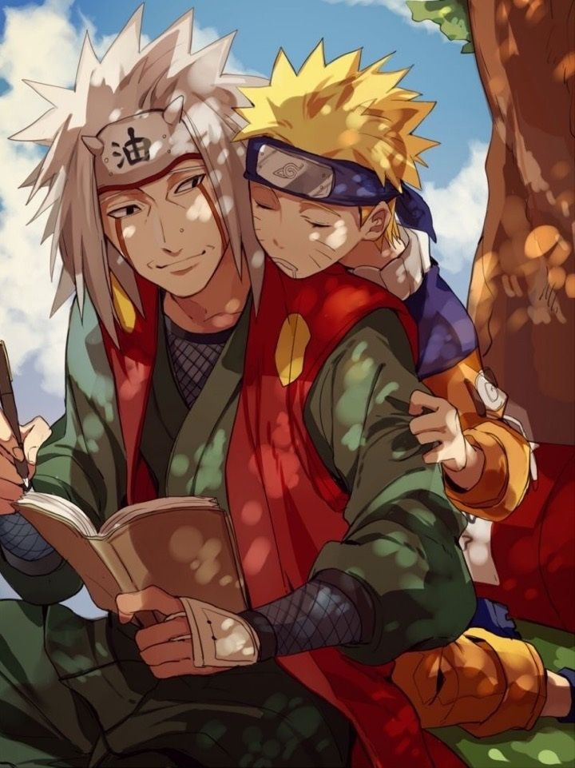

His Journal
The most important thing. for a shinobi is the SPIRIT. and the will to 'NEVER GIVE UP'.- Jiraiya 
In the shinobi world it's not how you live, it's how you die. A shinobi's life is not measured by how they live but rather it's measured by what they accomplish before their death.- Jiraiya

Knowing what it feels to be in PAIN, Is exactly why we try to be KIND to others.- Jiraiya
Sannin Trio

Legendary sannin Jiraiya, Orochimaru and Tsunade were prodigal students of the late (third) hokage, Hiruzen Sarutobi.

During a battle with Hanzo of the Salamander, they were the only Konoha ninja to survive Hanzō's attacks. As a reward for this, Hanzō dubbed them "Kanoha's Legendary Sannin", a title that would follow them for the rest of their lives and which they themselves would use with pride.

Sasuke, Naruto, and Sakura aren't considered Sannin because it's a unique title reserved for Orochimaru, Jiraiya, and Tsunade. ... But, it's not like Team 7 needs the recognition of a title like Sannin. One is a Hokage, the other is considered a shadow Hokage, and the third is world renowned for her medical ninjutsu.